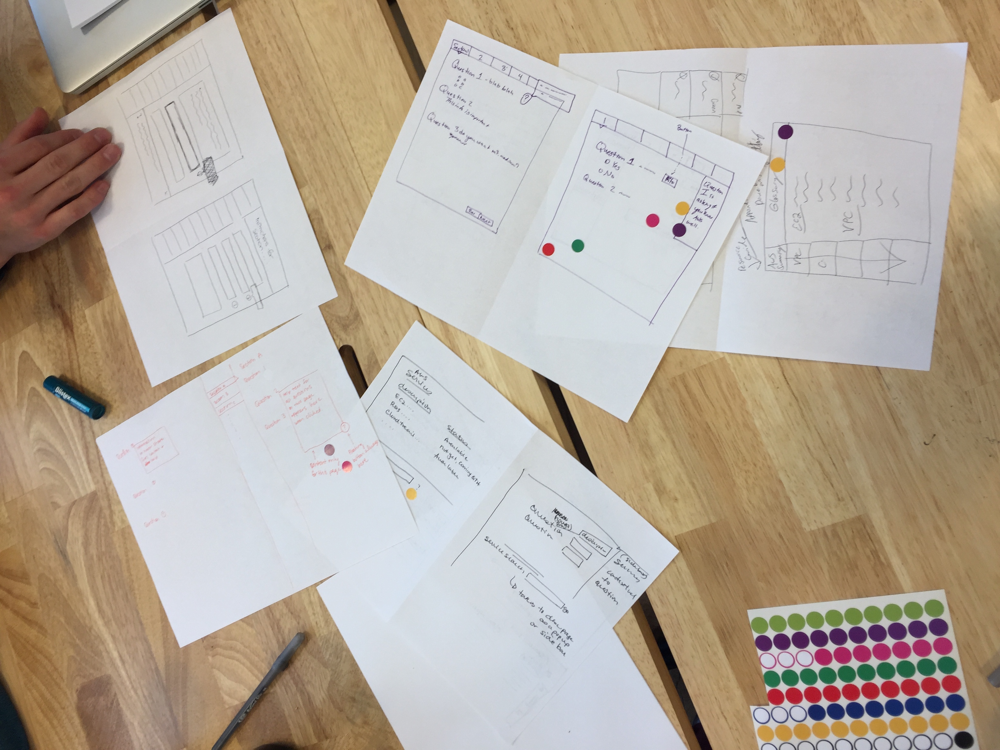
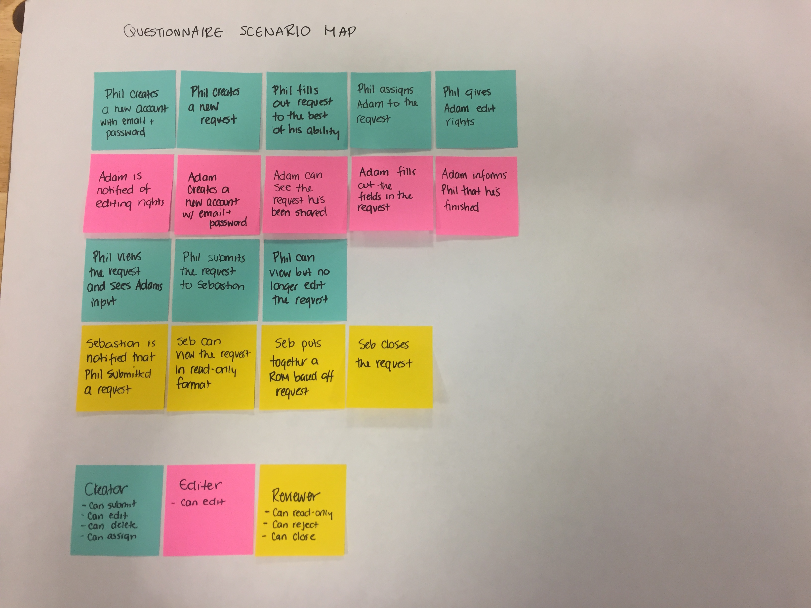
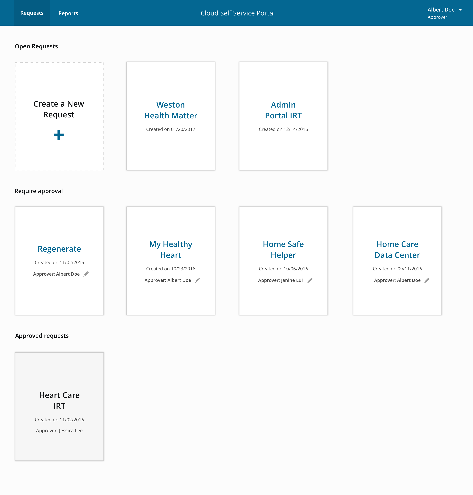
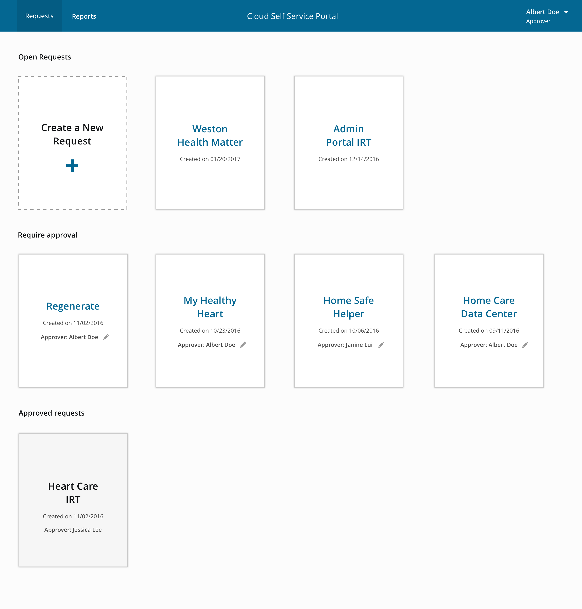

Service Design for Healthcare
Recently I worked with a Federal government agency to help them improve an internal process and build a tool that allowed them to stand up development environments within their IT sector. Their current process involved a lengthy Word Doc questionnaire that was being sent around to various departments and required multiple levels of approvals. It was difficult to keep track of who had the most recent version and what still needed sign off. It often took weeks to get a final version circulated and approved. The questionnaire was also unclear and contained confusing technical questions that people found difficult to answer.

They wanted to significantly reduce the time frame for standing up development environments and create a centralized repository for collection of requirements to increase transparency of AWS usage, instances and security.
Service Blueprint
I decided that a service blueprint would help us better understand the current process and identify the biggest pain points. I conducted a series of interviews with all of the different parties involved and began collecting feedback on individual interpretations of the process and what they were struggling with. Once I had a clearer picture of who the players were and what they were looking for I was able to put together the blueprint. I involved our product team as well as some key stakeholders of the process. I wanted to make sure those involved in the process were there to weigh in. A digital version made it easier to collaborate remotely.

Insights
Once we were able to see the process visually, it became pretty clear which steps were redundant, slowing it down and creating bottlenecks. We noticed a few major themes:
- Questions were confusing and required input from additional parties that were slow to respond.
- There were more levels of sign off than necessary.
- It was difficult to keep track of changes and versions. Because it’s a federal agency, they are limited by tools like Google Doc’s.
- It was unclear who signed off on what and what happened if changes were made after a level of sign off.
After we had the blueprint in place we were able to move actions around and experiment with streamlining the overall process. We discovered there were certain levels of sign off we could remove completely by making other users more autonomous.
Ideation
We also made the decision to tackle the questionnaire itself and figure out what was so confusing about it. I started by putting the current version in front of those responsible for filling it out and question by question we started to uncover the roadblocks. Since the questionnaire was a mix of business and technical requirements, it was unclear who was responsible for filling out what.
We were able to trim down a bunch of the content by taking it from 58 questions to 19. We decided to prioritize a solution that would make the approval flow clear by assigning users to the respective points in the process and notifying them when action was required. We also added helper text and tooltips to questions that potentially needed more explanation.



 
